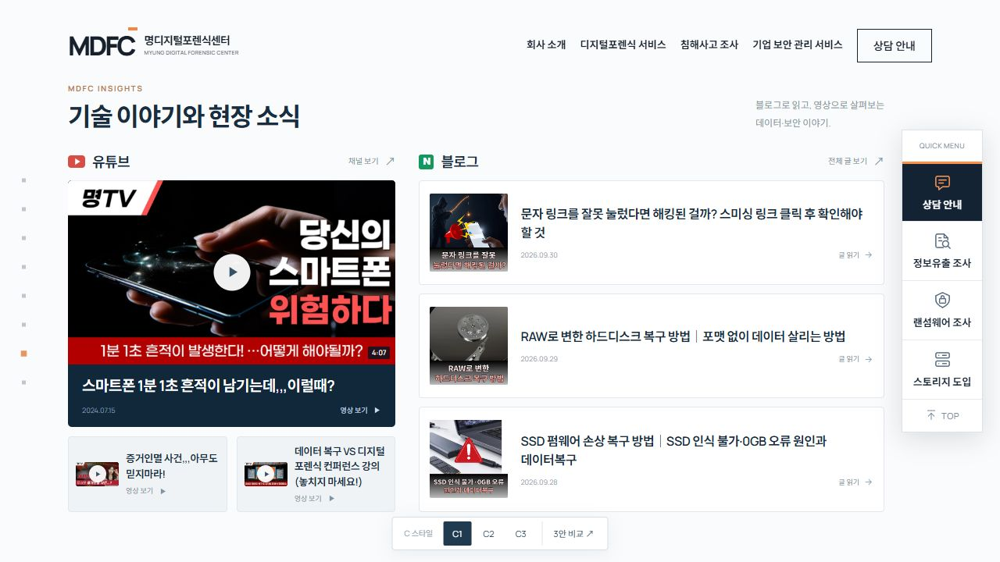
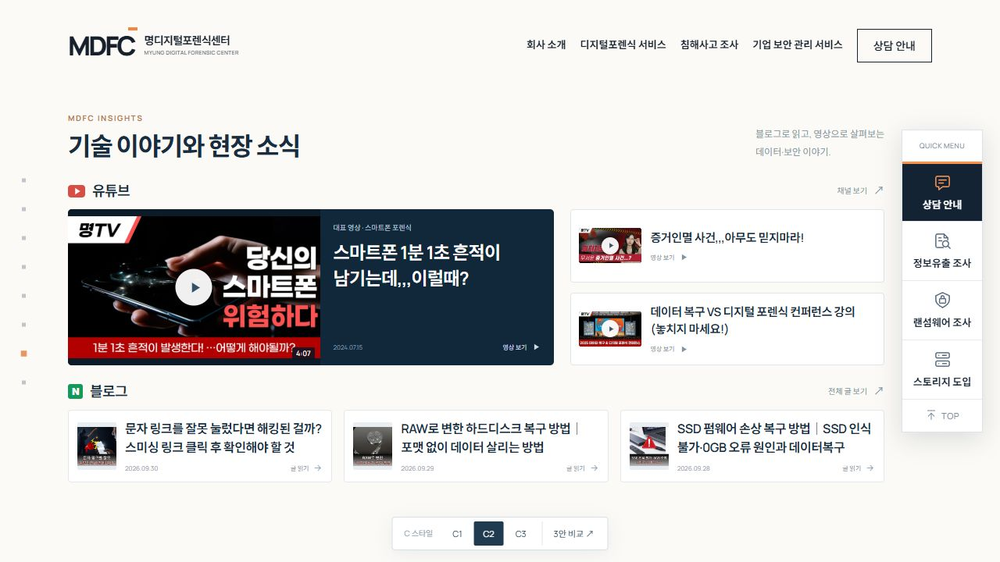
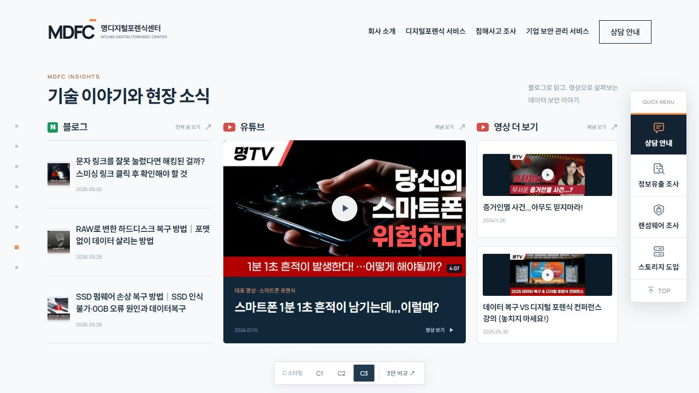

INSIGHTS / C STYLE VARIATIONS
대표 영상과 명확한 채널 구분을 유지하며, 콘텐츠의 배치와 비율을 달리했습니다.

유튜브와 블로그를 좌우로 분리
왼쪽에는 대표 영상과 추가 영상, 오른쪽에는 블로그 글을 모아 채널별로 탐색합니다.

영상 위, 읽을거리 아래
상단 영상 쇼케이스와 하단 블로그 카드로 나눠, 가로 흐름으로 콘텐츠를 살펴봅니다.

대표 영상이 중심이 되는 구성
중앙의 큰 대표 영상과 양쪽의 블로그·추가 영상으로 잡지처럼 편집합니다.